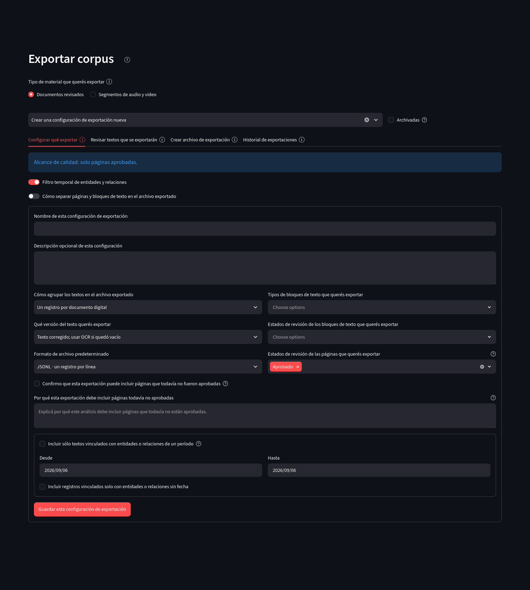
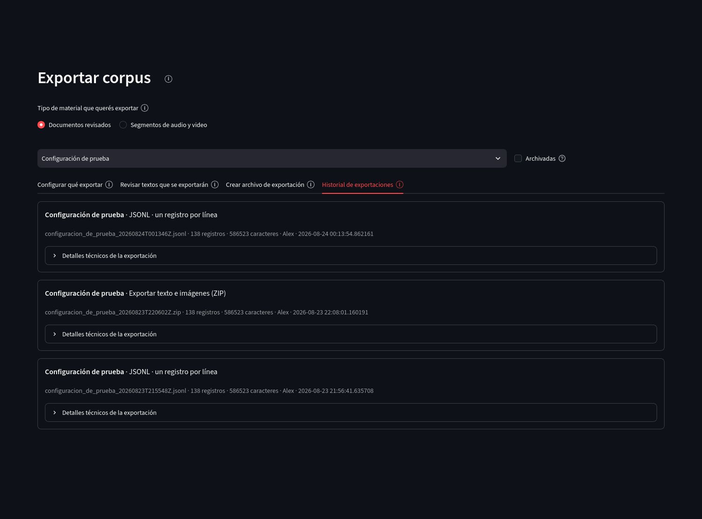
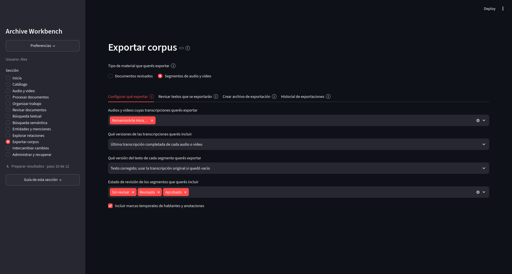

Resultados y preservación
Exportar corpus
Una exportación convierte una selección de textos y datos revisados en un archivo que puede utilizarse fuera de Archive Workbench. La configuración y el resultado quedan registrados para poder reconstruir qué contenido produjo cada salida.
Documentos revisados
Configuración de la exportación
Una configuración documental define cómo se agrupan los textos, qué versión del texto se usa, qué tipos y estados de bloque se incluyen, qué estados de página participan y cuál es el formato predeterminado. Los formatos disponibles son JSONL (un registro JSON por línea), CSV (tabla separada por comas) y Exportar texto e imágenes (ZIP), que agrega imágenes y un manifiesto estructurado.
{kind=link}

Abrir captura completa
Revisión previa de los textos
La vista previa permite inspeccionar el contenido que producirá la configuración seleccionada antes de crear un archivo. Si todavía no hay una configuración guardada o elegida, la pestaña lo indica y no muestra registros.
Creación del archivo de exportación
Después de revisar la selección, la aplicación propone una ruta dentro del proyecto y permite elegir el formato. El archivo se crea únicamente al ejecutar la acción de exportación.
Historial de exportaciones
El historial registra formato, cantidad de registros, tamaño, persona responsable, fecha y detalles técnicos de cada salida.
{kind=link}

Abrir captura completa
Segmentos de audio y video
Configuración de la exportación
La configuración audiovisual elige los medios, qué versión de transcripción se utilizará, qué versión de texto de los segmentos se exportará, qué estados de revisión se incluyen y si deben incorporarse marcas temporales de hablantes y anotaciones.
{kind=link}

Abrir captura completa
Revisión previa de los textos
La vista previa audiovisual muestra cantidad de segmentos, cantidad de caracteres y los fragmentos seleccionados. Cada registro conserva el medio de origen y el intervalo temporal, de modo que puede comprobarse qué partes de la transcripción formarán la salida.
Creación del archivo de exportación
Las transcripciones audiovisuales pueden exportarse como JSONL o CSV. El archivo se guarda dentro del proyecto en la ruta indicada y la selección previa de segmentos no modifica las transcripciones.
Historial de exportaciones
El historial audiovisual registra tamaño y huellas SHA-256 del archivo producido y del estado del corpus utilizado. Esas huellas permiten identificar con precisión qué salida se creó a partir de qué estado del proyecto.